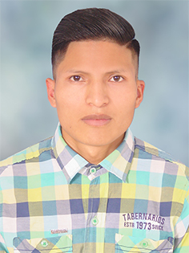

Eduardo Guamán
- a: Av. General Enríquez y Colombia (Sangolquí-Ec)
- e: guamandseduardo@gmail.com
- w: https://guamandseduardo.rbind.io
- m: +593 968 7225 25
Unidad Educativa “Juan Francisco Yerovi”
Unidad Educativa “La Pacífica”
Área: Termo solar
Puesto: Analista de datos meteorológicos
Descripción de actividades:| Nivel hablado | Nivel escrito | Nivel escuchado |
|---|---|---|
| Intermedio | Intermedio | Básico |
| Nivel hablado | Nivel escrito | Nivel escuchado |
|---|---|---|
| Básico | Básico | Básico |
Participación en los diferentes eventos científicos en el área de estadística con ponencias de posters y artículos científicos durante las jornadas académicas de la Escuela de Física y Matemática, ESPOCH. De los varios títulos, los siguientes son algunos de los poster y artículos científicos con certificación: